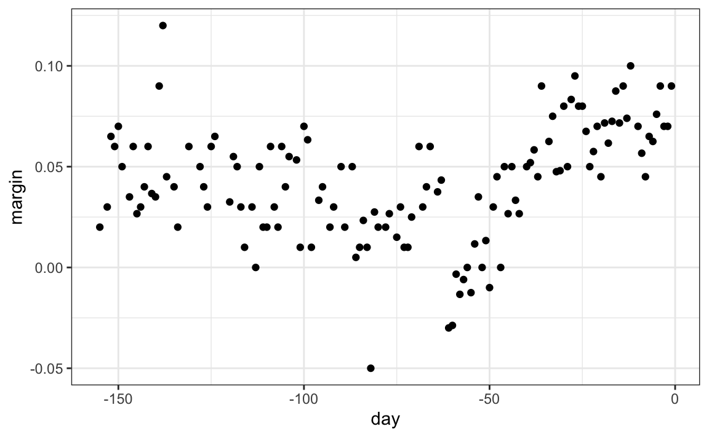
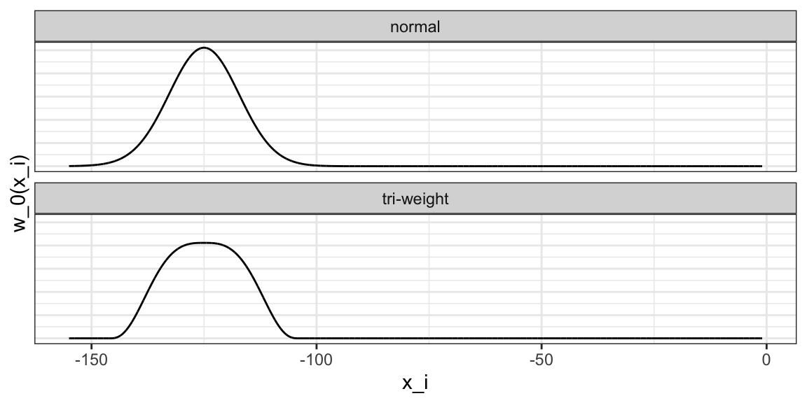

28 Smoothing
Before continuing with machine learning algorithms, we introduce the important concept of smoothing. Smoothing is a widely used technique across data analysis, also known as curve fitting or low-pass filtering. Its purpose is to uncover underlying trends in noisy data when the exact shape of the trend is unknown. The key idea is to assume that the trend itself is smooth, like a gently curving surface, while the noise consists of unpredictable, irregular fluctuations. By leveraging this smoothness assumption, smoothing methods help us separate the systematic pattern from the random wobbles.
Part of what we explain in this section are the assumptions that permit us to extract the trend from the noise.
28.1 Example: Is it a 2 or a 7?
To motivate the need for smoothing and make the connection with machine learning, we will construct a simplified version of the MNIST dataset with just two classes for the outcome and two predictors. Specifically, we define the challenge as building an algorithm that can determine if a digit is a 2 or 7 from the proportion of dark pixels in the upper left quadrant (\(X_1\)) and the lower right quadrant (\(X_2\)). We also selected a random sample of 1,000 digits, 800 in the training set and 200 in the test set. Both sets are almost evenly distributed with 2s and 7s. We provide this dataset in the mnist_27 object in the dslabs package. For the training data, we have \(n=800\) observed outcomes \(y_1,\dots,y_n\), with \(Y\) indicating whether the digit is 7 or 2, and \(n=800\) features \(\mathbf{x}_1, \dots, \mathbf{x}_n\), with each feature a two-dimensional point \(\mathbf{x}_i = (x_{i,1}, x_{i,2})^\top\).
To illustrate how to interpret \(X_1\) and \(X_2\), we include four example images. On the left are the original images of the two digits with the largest and smallest values for \(X_1\) and on the right we have the images corresponding to the largest and smallest values of \(X_2\):

Here is a plot of the observed \(X_2\) versus observed \(X_1\) with color determining if \(y\) is 1 (blue) or 0 (red):

We can immediately see some patterns. For example, if \(x_1\) (the upper left panel) is very large, then the digit is probably a 7. Also, for smaller values of \(x_1\), the 2s appear to be in the mid range values of \(x_2\).
We can start getting a sense for why these predictors are useful, but also why the problem will be somewhat challenging.
We haven’t really learned any algorithms yet, so let’s try building an algorithm using multivariable regression. The model is simply:
\[ p(\mathbf{x}) = \mathrm{Pr}(Y=1 \mid \mathbf{X}=\mathbf{x}) = \mathrm{Pr}(Y=1 \mid X_1=x_1 , X_2 = x_2) = \beta_0 + \beta_1 x_1 + \beta_2 x_2 \]
We fit can fit this model using least squares and obtain an estimate \(\hat{p}(\mathbf{x})\) by using the least square estimates \(\hat{\beta}_0\), \(\hat{\beta}_1\) and \(\hat{\beta}_2\). We define a decision rule by predicting \(\hat{y}=1\) if \(\hat{p}(\mathbf{x})>0.5\) and 0 otherwise.
We get an accuracy of 0.775, well above 50%. Not bad for our first try. But can we do better?
Because we constructed the mnist_27 example and we had at our disposal 60,000 digits in just the MNIST dataset, we used this to build the true conditional distribution \(p(\mathbf{x})\). Keep in mind that in practice we don’t have access to the true conditional distribution. We include it in this educational example because it permits the comparison of \(\hat{p}(\mathbf{x})\) to the true \(p(\mathbf{x})\). This comparison teaches us the limitations of different algorithms.
We have stored the true \(p(\mathbf{x})\) in the mnist_27 and can plot it as an image. We draw a curve that separates values of \(\mathbf{x}\) for which \(p(\mathbf{x}) > 0.5\) and those for which \(p(\mathbf{x}) < 0.5\):

To start understanding the limitations of regression, first note that with regression \(\hat{p}(\mathbf{x})\), has to be a plane. As a result the boundary defined by the decision rule is given by: \(\hat{p}(\mathbf{x}) = 0.5\):
\[ \hat{\beta}_0 + \hat{\beta}_1 x_1 + \hat{\beta}_2 x_2 = 0.5 \implies \hat{\beta}_0 + \hat{\beta}_1 x_1 + \hat{\beta}_2 x_2 = 0.5 \implies x_2 = (0.5-\hat{\beta}_0)/\hat{\beta}_2 -\hat{\beta}_1/\hat{\beta}_2 x_1 \]
This implies that for the boundary, \(x_2\) is a linear function of \(x_1\), which suggests that our regression approach has no chance of capturing the non-linear nature of the true \(p(\mathbf{x})\). Below is a visual representation of \(\hat{p}(\mathbf{x})\) which clearly shows how it fails to capture the shape of \(p(\mathbf{x})\):

We need something more flexible: a method that permits estimates with shapes other than a plane. Smoothing techniques permit this flexibility. We will start by describing nearest neighbor and kernel approaches. To understand why we cover this topic, remember that the concepts behind smoothing techniques are extremely useful in machine learning because conditional expectations/probabilities can be thought of as trends of unknown shapes that we need to estimate in the presence of uncertainty.
28.2 Signal plus noise model
To explain these concepts, we will focus first on a problem with just one predictor. Specifically, we try to estimate the time trend in the 2008 US popular vote poll margin (the difference between Obama and McCain). Later we will learn how to extend smoothing ideas to higher dimensions.
polls_2008 |> ggplot(aes(day, margin)) + geom_point()
For the purposes of the popular vote example, do not think of it as a forecasting problem. Instead, we are simply interested in learning the shape of the trend after the election is over.
We assume that for any given day \(x\), there is a true preference among the electorate \(f(x)\), but due to the uncertainty introduced by the polling, each data point comes with an error \(\varepsilon\). A mathematical model for the observed poll margin is:
\[ Y_i = f(x_i) + \varepsilon_i \]
To think of this as a machine learning problem, consider that we want to predict \(Y\) given a day \(x\). If we knew the conditional expectation \(f(x) = \mathrm{E}(Y \mid X=x)\), we would use it. But since we don’t know this conditional expectation, we have to estimate it. Let’s use regression, since it is the only method we have learned up to now.
The fitted regression line does not appear to describe the trend very well. For example, on September 4 (day -62), the Republican Convention was held and the data suggest that it gave John McCain a boost in the polls. However, the regression line does not capture this potential trend. To see the lack of fit more clearly, we note that points above the fitted line (blue) and those below (red) are not evenly distributed across days. We therefore need an alternative, more flexible approach.
28.3 Bin smoothing
The general idea of smoothing is to group data points into strata in which the value of \(f(x)\) can be assumed to be constant. We can make this assumption when we think \(f(x)\) changes slowly and, as a result, \(f(x)\) is almost constant in small windows of \(x\). An example of this idea for the poll_2008 data is to assume that public opinion remained approximately the same within a week’s time. With this assumption in place, we have several data points with the same expected value.
If we fix a day to be in the center of our week, call it \(x_0\), then for any other day \(x\) such that \(|x - x_0| \leq h\), with \(h = 3.5\), we assume \(f(x)\) is a constant \(f(x) = \mu\). This assumption implies that:
\[ E[Y_i | X_i = x_i ] \approx \mu \mbox{ if } |x_i - x_0| \leq 3.5 \]
In smoothing, we call the size of the interval satisfying \(|x_i - x_0| \leq 3.5\) the window size, bandwidth or span. Later we will learn how to optimize this parameter.
This assumption implies that a good estimate for \(f(x_0)\) is the average of the \(y_i\) values in the window. If we define \(A_0\) as the set of indexes \(i\) such that \(|x_i - x_0| \leq 3.5\) and \(N_0\) as the number of indexes in \(A_0\), then our estimate is:
\[ \hat{f}(x_0) = \frac{1}{N_0} \sum_{i \in A_0} y_i \]
We make this calculation with each value of \(x\) as the center. In the poll example, for each day, we would compute the average of the values within a week with that day in the center. Here are two examples: \(x_0 = -125\) and \(x_0 = -55\). The blue segment represents the resulting average.
By computing this mean for every point, we form an estimate of the underlying curve \(f(x)\). Below we show the procedure happening as we move from the -155 up to 0. At each value of \(x_0\), we keep the estimate \(\hat{f}(x_0)\) and move on to the next point:

The final code and resulting estimate look like this:

28.4 Kernels
The bin smoother’s estimate can look quite wiggly. A main reason is that as the window slides, points abruptly enter or leave the bin, causing jumps in the average. We can reduce these discontinuities with a kernel smoother. A kernel smoother assigns a weight to each data point according to its distance from the target location \(x_0\), then forms a weighted average.
Formally, let \(K\) be a nonnegative kernel function and let \(h>0\) be a bandwidth or window width. Define weights
\[ w_{x_0}(x_i) = K\!\left(\frac{x_i - x_0}{h}\right), \]
and estimate the trend at \(x_0\) with
\[ \hat{f}(x_0) \;=\; \frac{\sum_{i=1}^N w_{x_0}(x_i)\,y_i}{\sum_{i=1}^N w_{x_0}(x_i)}. \]
The bin smoother is a special case with the boxcar (or uniform) kernel \(K(u) = 1\) if \(|u| \leq 1\) and 0 otherwise, which corresponds to assigning weight 1 inside the window and 0 outside. This is why, in the code above, we used kernel = "box" with ksmooth. To attenuate the wiggles caused by abrupt point entry and exit, we can use a smooth kernel that gives more weight to points near \(x_0\) and rapidly decays for distant points. The option kernel = "normal" in ksmooth does exactly this by using the standard normal density for \(K\).
Below we visualize the box and normal kernels for \(x_0 = -125\) and \(h = 3.5\), showing how the boxcar kernel weighs all in-bin points equally, while the normal kernel downweights points near the edges.

The final code and resulting plot for the normal kernel look like this:
fit <- with(polls_2008, ksmooth(day, margin, kernel = "normal", bandwidth = 7))
polls_2008 |> mutate(smooth = fit$y) |>
ggplot(aes(day, margin)) +
geom_point(size = 3, alpha = .5, color = "grey") +
geom_line(aes(day, smooth), color = "red")
Notice that this version looks smoother.
There are several functions in R that implement bin smoothers. One example is ksmooth, shown above. In practice, however, we typically prefer methods that use slightly more complex models than fitting a constant. The final result above, for example, is still somewhat wiggly in parts we don’t expect it to be (between -125 and -75, for example). Methods such as loess, which we explain next, improve on this.
28.5 Local weighted regression (loess)
A limitation of the bin smoother approach just described is that we need small windows for the approximately constant assumptions to hold. As a result, we end up with a small number of data points to average and obtain imprecise estimates \(\hat{f}(x)\). Here we describe how local weighted regression (loess) permits us to consider larger window sizes. To do this, we will use a mathematical result, referred to as Taylor’s theorem, which tells us that if you look closely enough at any smooth function \(f(x)\), it will look like a line. To see why this makes sense, consider the curved edges gardeners make using straight-edged spades:

(“Downing Street garden path edge”1 by Flickr user Number 102. CC-BY 2.0 license3.)
Instead of assuming the function is approximately constant in a window, we assume the function is locally linear. We can consider larger window sizes with the linear assumption than with a constant. Instead of the one-week window, we consider a larger one in which the trend is approximately linear. We start with a three-week window and later consider and evaluate other options:
\[ E[Y_i | X_i = x_i ] = \beta_0 + \beta_1 (x_i-x_0) \mbox{ if } |x_i - x_0| \leq 21 \]
For every point \(x_0\), loess defines a window and fits a line within that window. Here is an example showing the fits for \(x_0=-125\) and \(x_0 = -55\):
The fitted value at \(x_0\) becomes our estimate \(\hat{f}(x_0)\). Below we show the procedure happening as we move from the -155 up to 0:

The final result is a smoother fit than the bin smoother since we use larger sample sizes to estimate our local parameters:
total_days <- diff(range(polls_2008$day))
span <- 21/total_days
fit <- loess(margin ~ day, degree = 1, span = span, data = polls_2008)
polls_2008 |> mutate(smooth = fit$fitted) |>
ggplot(aes(day, margin)) +
geom_point(size = 3, alpha = .5, color = "grey") +
geom_line(aes(day, smooth), color = "red")
Different spans give us different estimates. We can see how different window sizes lead to different estimates:

Here are the final estimates:
There are three other differences between loess and the typical bin smoother.
1. Rather than keeping the bin size the same, loess keeps the number of points used in the local fit the same. This number is controlled via the span argument, which expects a proportion. For example, if N is the number of data points and span=0.5, then for a given \(x\), loess will use the 0.5*N closest points to \(x\) for the fit.
2. When fitting a line locally, loess uses a weighted approach. Basically, instead of using least squares, we minimize a weighted version:
\[ \sum_{i=1}^N w_0(x_i) \left[y_i - \left\{\beta_0 + \beta_1 (x_i-x_0)\right\}\right]^2 \]
However, instead of the Gaussian kernel, loess uses a function called the Tukey tri-weight:
\[ K(u)= \left( 1 - |u|^3\right)^3 \mbox{ if } |u| \leq 1 \mbox{ and } K(u) = 0 \mbox{ if } |u| > 1 \]
To define the weights, we denote \(2h\) as the window size and define \(w_0(x_i)\) as above: \(w_0(x_i) = K\left(\frac{x_i - x_0}{h}\right)\).
This kernel differs from the Gaussian kernel in that more points get values closer to the max:

3. loess has the option of fitting the local model robustly. An iterative algorithm is implemented in which, after fitting a model in one iteration, outliers are detected and down-weighted for the next iteration. To use this option, we use the argument family="symmetric".
28.5.1 Fitting parabolas
Taylor’s theorem also tells us that if you look at any mathematical function closely enough, it looks like a parabola. The theorem also states that you don’t have to look as closely when approximating with parabolas as you do when approximating with lines. This means we can make our windows even larger and fit parabolas instead of lines.
\[ E[Y_i | X_i = x_i ] = \beta_0 + \beta_1 (x_i-x_0) + \beta_2 (x_i-x_0)^2 \mbox{ if } |x_i - x_0| \leq h \]
You may have noticed that when we showed the code for using loess, we set degree = 1. This tells loess to fit polynomials of degree 1, a fancy name for lines. If you read the help page for loess, you will see that the argument degree defaults to 2. By default, loess fits parabolas not lines. Here is a comparison of the fitting lines (red dashed) and fitting parabolas (orange solid):
total_days <- diff(range(polls_2008$day))
span <- 28/total_days
fit_1 <- loess(margin ~ day, degree = 1, span = span, data = polls_2008)
fit_2 <- loess(margin ~ day, span = span, data = polls_2008)
polls_2008 |> mutate(smooth_1 = fit_1$fitted, smooth_2 = fit_2$fitted) |>
ggplot(aes(day, margin)) +
geom_point(size = 3, alpha = .5, color = "grey") +
geom_line(aes(day, smooth_1), color = "red", lty = 2) +
geom_line(aes(day, smooth_2), color = "orange", lty = 1) The degree = 2 gives us more wiggly results. In general, we actually prefer degree = 1 as it is less prone to this kind of noise.
28.5.2 Beware of default smoothing parameters
The geom_smooth function in the ggplot2 package supports a variety of smoothing methods. By default, it uses loess or a related method called Generalized Additive Model, the latter if any window of data exceeds 1000 observations. We can request that loess is used using the method function:
polls_2008 |> ggplot(aes(day, margin)) +
geom_point() +
geom_smooth(method = loess, formula = y ~ x)
But be careful with default parameters as they are rarely optimal. However, you can conveniently change them:
polls_2008 |> ggplot(aes(day, margin)) +
geom_point() +
geom_smooth(method = loess, formulat = y ~ x, method.args = list(span = 0.15, degree = 1))28.6 Connecting smoothing to machine learning
To see how smoothing relates to machine learning with a concrete example, consider again our Section 28.1 example. If we define the outcome \(Y = 1\) for digits that are seven and \(Y=0\) for digits that are 2, then we are interested in estimating the conditional probability:
\[ p(\mathbf{x}) = \mathrm{Pr}(Y=1 \mid X_1=x_1 , X_2 = x_2). \]
with \(x_1\) and \(x_2\) the two predictors defined in Section 28.1. In this example, the 0s and 1s we observe are “noisy” because for some regions the probabilities \(p(\mathbf{x})\) are not that close to 0 or 1. We therefore need to estimate \(p(\mathbf{x})\). Smoothing is an alternative to accomplishing this. In Section 28.1, we saw that linear regression was not flexible enough to capture the non-linear nature of \(p(\mathbf{x})\), thus smoothing approaches provide an improvement. In Section 29.1, we describe a popular machine learning algorithm, k-nearest neighbors, which is based on the concept of smoothing.
28.7 Exercises
1. The dslabs package provides the following dataset with mortality counts for Puerto Rico for 2015-2018.
Remove data from before May 2018, then use the loess function to obtain a smooth estimate of the expected number of deaths as a function of date. Plot this resulting smooth function. Make the span about two months long.
2. Plot the smooth estimates against day of the year, all on the same plot but with different colors.
3. Suppose we want to predict 2s and 7s in our mnist_27 dataset with just the second covariate. Can we do this? On first inspection it appears the data does not have much predictive power. In fact, if we fit a regular logistic regression, the coefficient for x_2 is not significant!
Plotting a scatterplot here is not useful since y is binary:
with(mnist_27$train, plot(x_2, y)Fit a loess line to the data above and plot the results. Notice that there is predictive power, except the conditional probability is not linear.